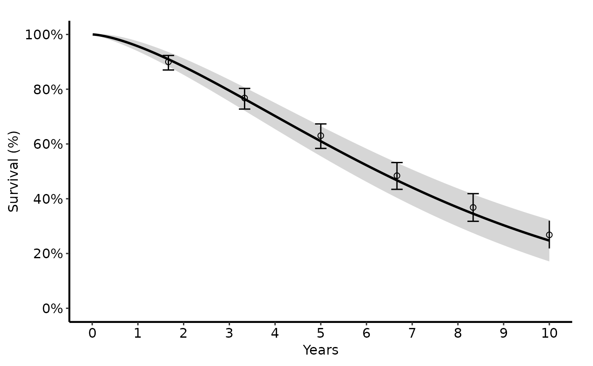
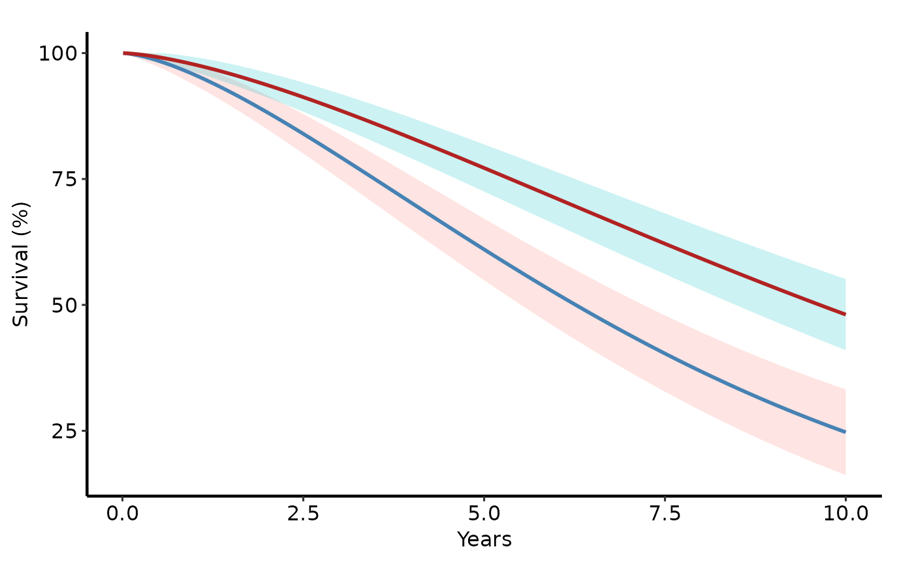

Validates and stores pre-computed parametric curve data — and optional
Kaplan-Meier empirical overlay and population life-table reference — as an
hvti_hazard object. Pass the result to plot.hvti_hazard() to render
the figure.
Usage
hvti_hazard(
curve_data,
x_col = "time",
estimate_col = "survival",
lower_col = NULL,
upper_col = NULL,
group_col = NULL,
empirical = NULL,
emp_x_col = x_col,
emp_estimate_col = "estimate",
emp_lower_col = NULL,
emp_upper_col = NULL,
emp_group_col = group_col,
reference = NULL,
ref_x_col = x_col,
ref_estimate_col = estimate_col,
ref_group_col = NULL
)Arguments
- curve_data
Data frame of parametric predictions (fine grid). Typical source: SAS
predictdataset exported to CSV, orsample_hazard_data().- x_col
Name of the time / age column. Default
"time".- estimate_col
Name of the predicted-value column:
"survival","hazard", or"cumhaz". Default"survival".- lower_col
Lower CI column in
curve_data, orNULLfor no ribbon. DefaultNULL.- upper_col
Upper CI column in
curve_data, orNULL. DefaultNULL.- group_col
Stratification column in
curve_data, orNULLfor a single curve. DefaultNULL.- empirical
Optional data frame of KM empirical points (SAS
ploutdataset). Stored in$tables$empirical. DefaultNULL.- emp_x_col
x column in
empirical. Defaults tox_col.- emp_estimate_col
y column in
empirical. Default"estimate".- emp_lower_col
Lower error-bar column in
empirical, orNULL. DefaultNULL.- emp_upper_col
Upper error-bar column in
empirical, orNULL. DefaultNULL.- emp_group_col
Group column in
empirical. Defaults togroup_col.- reference
Optional data frame of population life-table curves (SAS
smatcheddataset). Stored in$tables$reference. DefaultNULL.- ref_x_col
x column in
reference. Defaults tox_col.- ref_estimate_col
y column in
reference. Defaults toestimate_col.- ref_group_col
Linetype-grouping column in
reference, orNULL. DefaultNULL.
Value
An S3 object of class c("hvti_hazard", "hvti_data") with:
$data (curve data frame), $meta (all column-name mappings),
$tables$empirical, $tables$reference.
Details
This constructor covers the complete tp.hp.dead.* SAS template family.
All column-name mappings and all three data frames are fixed at construction
time; aesthetic parameters (ci_alpha, line_width, etc.) are passed to
plot().
Examples
library(ggplot2)
dat <- sample_hazard_data(n = 500, time_max = 10)
emp <- sample_hazard_empirical(n = 500, time_max = 10, n_bins = 6)
# Basic survival curve with KM overlay
hp <- hvti_hazard(dat,
lower_col = "surv_lower", upper_col = "surv_upper",
empirical = emp,
emp_lower_col = "lower", emp_upper_col = "upper"
)
plot(hp) +
scale_colour_manual(values = c("steelblue"), guide = "none") +
scale_fill_manual(values = c("steelblue"), guide = "none") +
scale_x_continuous(limits = c(0, 10), breaks = 0:10) +
scale_y_continuous(limits = c(0, 100), breaks = seq(0, 100, 20),
labels = function(x) paste0(x, "%")) +
labs(x = "Years", y = "Survival (%)") +
hvti_theme("manuscript")

# Stratified groups
dat2 <- sample_hazard_data(
n = 400, groups = c("No Takedown" = 1.0, "Takedown" = 0.65)
)
hp2 <- hvti_hazard(dat2,
lower_col = "surv_lower", upper_col = "surv_upper",
group_col = "group"
)
plot(hp2) +
scale_colour_manual(
values = c("No Takedown" = "steelblue", "Takedown" = "firebrick"),
name = NULL
) +
labs(x = "Years", y = "Survival (%)") +
hvti_theme("manuscript")
